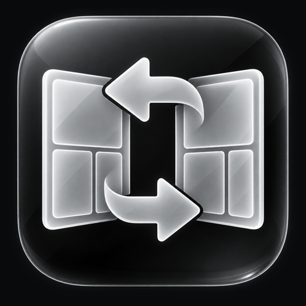
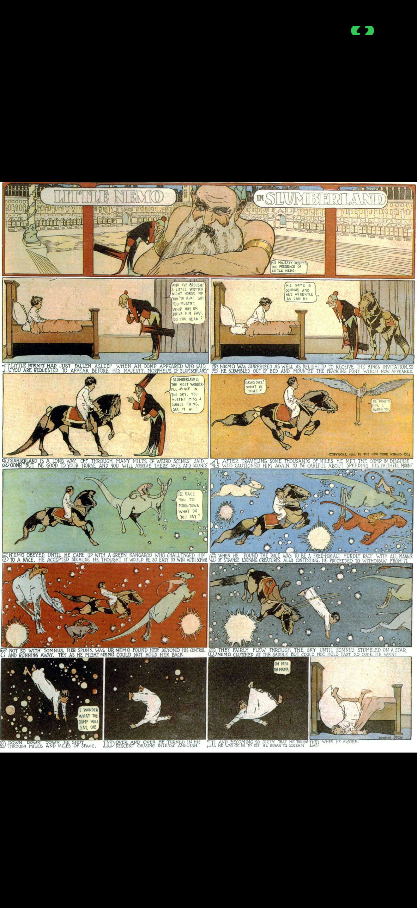
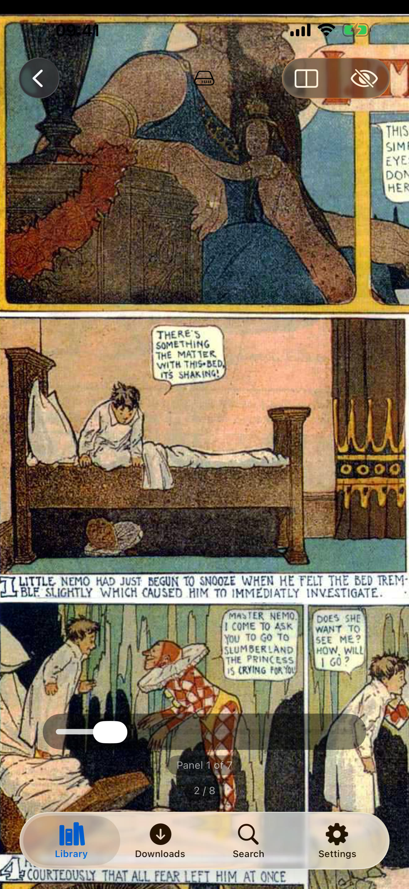
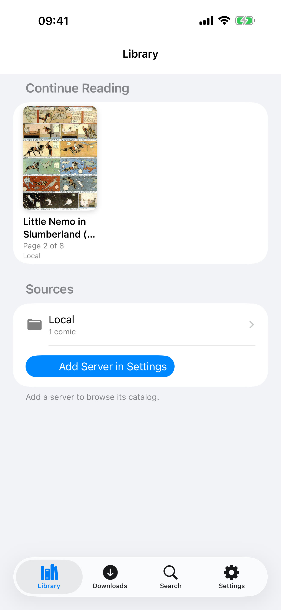
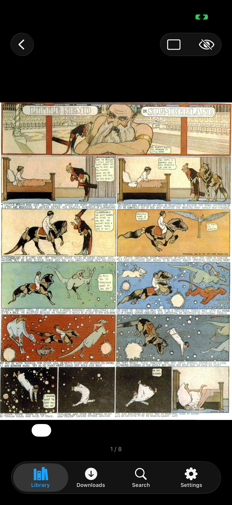
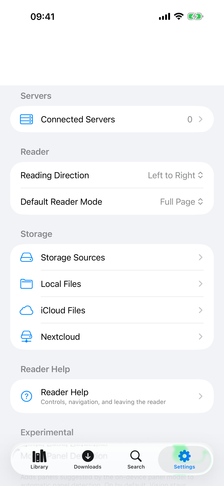

Reverse Panels
Read your way.
Public beta · iOS & iPadOS 17+Open this page on your iPhone or iPad to add the source in one tap.





Shown with Little Nemo in Slumberland by Winsor McCay (1905, public domain).
A comic reader for your own library
- Panel Flow: guided panel-by-panel reading, left-to-right or right-to-left, powered by an on-device panel detector.
- Your sources: Kavita, any OPDS catalog, Nextcloud, iCloud Drive, and files on your device.
- CBZ, CBR, and PDF, with offline downloads.
- Continue Reading, Favorites, and pinned locations on the Library home screen.
- Native and accessible: light and dark mode, Dynamic Type, and VoiceOver.
Install
- Install SideStore or AltStore.
- Tap Add to SideStore or Add to AltStore above, or add this source manually:
https://josh-eg112.github.io/reverse-panels/apps.json - Install Reverse Panels. New betas then appear as updates.
Prefer another tool? Download the IPA and sign it with Sideloadly or similar. With a free Apple ID, apps must be refreshed every 7 days.
Privacy
No accounts, analytics, ads, or tracking. Reverse Panels talks only to the servers you add. Credentials stay in your device's Keychain, and panel detection runs entirely on your device. Details